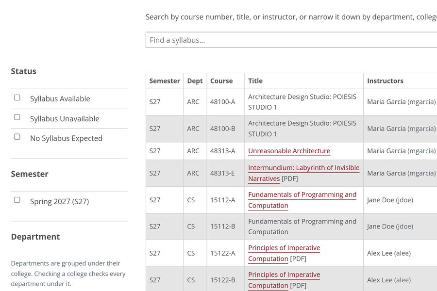
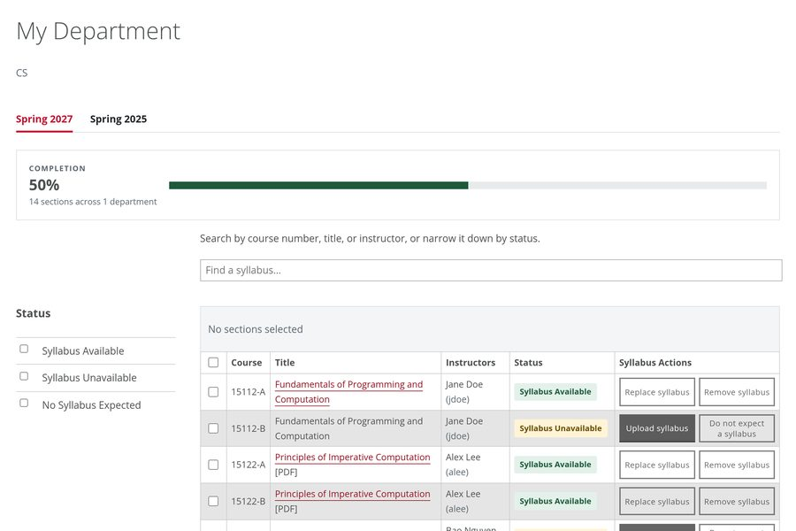
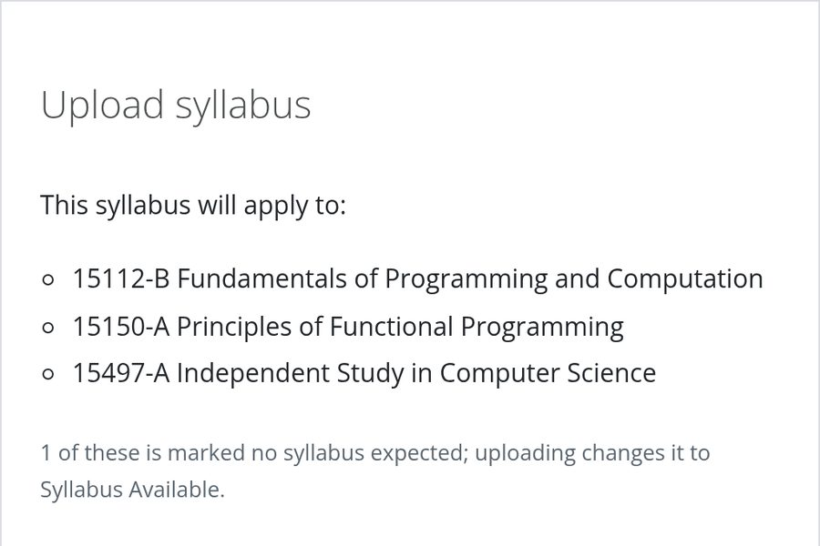

News and Events
Stories with Load More, a list of dates, events from CMU's calendar, and date blocks. All from CMU's standard template except the date blocks at the end, which come from the kit.
News Grid and Load More
A grid of linked stories, each with a picture, a date, a title, and a sentence, as on Dining Services' news page. After the first batch, the rest wait behind a Load More button. In Cascade, a news index writes all of this; the markup is here for apps and for knowing the parts.
-
The picture is the background of a
div.img, cropped to fill the space, so any shape works. -
Load More needs the template's script and a
.section-idaround the grid. Mark the items to hold backhide, with the picture indata-imgso it loads only when shown. Each click shows 12 more, and the button goes away when none are left. Try it below: three more are hidden. -
Add a color (
grey,darkgrey, and so on) to put the stories in white boxes on that color, andplaidorglobefor a pattern behind them. This one isgrey plaid; Transportation's news page usesdarkgrey plaid. See Colors and Globe and Plaid. - Name what the button loads: “Load More Stories”, not just “Load More”.
section-id, grid column3 news, grey,
plaid, filterable, img, hide,
loadmore
An app showing its own results should use the kit's Load More instead, which doesn't depend on the template's script.
Event List
A short list of dates, each with a month-and-day block beside it, as in the
Information Security Office's sidebar. Each item is a link whose first
span holds the month (in its own span) and the day; the
whole row is the link. For an item with nothing to link to, use
<i> instead of <a>. It fits a sidebar box; add
simple for no gray.
events
Office Hours Queue
The page's own content goes here, beside the dates.
Events From events.cmu.edu
CMU's events calendar, events.cmu.edu, gives any page a live list of upcoming events. Its widgets bring their own styles: a list with a month-and-day block beside each event, as on University Health Services' home page, or tiles with a photo and the date over its corner, as on Dining Services'. The widget is set up on events.cmu.edu, which gives it a number; the page needs only two lines:
<div class="lwcw" data-options="id=24&format=html"></div>
<script id="lw_lwcw" src="//events.cmu.edu/livewhale/theme/core/scripts/lwcw.js"></script>-
Put it in a grid box or a sidebar box with a heading, and end with
a
ctato the full calendar, such as “View the Full Student Affairs Calendar.” - Ask your calendar's events.cmu.edu administrator for a widget; they choose which events it shows and how many.
- For dates you list yourself, such as deadlines, use the template's event list, or the kit's date blocks, which match the widget's look.
Date Blocks and Event Cards
From the kit (cmu-cms.css), unlike the rest of this
page: the template has no date block that stands on its own or sits over a photo.
A month-and-day block in the style of the events.cmu.edu widgets, for a date that
stands on its own or sits over a photo. For a list of dates, use the template's
event list; for a calendar of events,
embed its events.cmu.edu widget. Use a
<time> with a datetime so the full date is in the
markup, and add cmu-date--red for a red month.
cmu-date, cmu-date-month, cmu-date-day,
cmu-date--red
Event cards put the date over the corner of a photo, with a red rule under it, as on Dining Services' home page. Use photos of the same shape; the kit crops them to 3:2.
cmu-event-cards, cmu-date--red
-

Spring Syllabi Due
11:59 p.m.
-

Training for Course Staff
2–3 p.m., Zoom
-

Camera Kit Workshop
Noon–1 p.m., Hunt Library